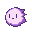
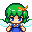
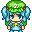
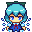
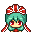
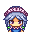
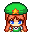

敵の攻撃の中には、こちらを様々な状態異常にしてくるものがあります。
また、道具の中には、自分や敵を状態異常にするものがあります。
自分がかかっている状態異常は、メニューの「状態」から見ることができます。
代表的な状態異常は以下のとおりです。
| 元気・脱力 | 攻撃力が上がる・下がる。 |
| 頑強・軟弱 | 防御力が上がる・下がる。 |
| 鬱 | 2ターンに1回しか動けなくなる。 |
| 倍速 | 1ターンに2回動ける。 |
| 眠り | 動けなくなる。眠りの深さによって起きる条件が異なるが、一定ターンが過ぎれば必ず目覚める。 |
| 泥酔 | 思い通りに動けなくなる。 |
| 封印 | 敵の特殊能力を無効化する。スペル宣言不可。本が読めなくなる。 |
| 嫉妬 | 攻撃力が倍増し、積極的に特技を使用する。 |
敵のレベル敵にもレベル(Easy,Normalなど)があります。
敵の属性とアイテムへの影響一部の敵キャラクタは属性を持っています。属性を持つキャラクタの攻撃は、その属性を帯びています。属性を帯びた攻撃を受けると、アイテムに悪影響が出ることがあります。
敵の同士討ちに注意！行動次第では、敵の行動が別の敵にダメージを与えることがあります。弱った敵を倒すチャンスですが、もし敵が他の敵を倒してしまうと、その敵のレベルが上がってしまいます。 レベルの上がった敵は非常に強いことが多いので、注意しましょう。 |
 |
毛玉とりたてて特徴のない毛玉です。さっさと蹴散らしてしまいましょう。 |
 |
大妖精いきなり隣にワープしてきます。 |
 |
にとり迷彩コートを着込み、カモフラージュ状態で接近してきます。ニコイチの材料を常に探していて、アイテムを盗んだり 投げたアイテムをキャッチしたりします。 強くなるごとにリュックの容量も上がるみたいです。 |
 |
チルノたまに氷漬けにされて、その場から歩けなくなってしまいます。「あたいったら最強ね！」 まあ、凍るのは足元だけなので、攻撃はできるんですが… |
 |
雛体力が危なくなると、厄が飛び散ってアイテムが呪われてしまいます。でも、アイテムの厄を吸いとってくれることもあるので憎めない。 |
 |
咲夜さん素早いナイフさばきで連続攻撃してきます。 |
パチュリー間合いをとって魔法を撃ってきます。その上、こちらの魔法を跳ね返してきます。 運動不足で動きが遅いのが救いか。 |
 |
美鈴咲夜さんに起こされます。親近感がわきます。そりゃそうだ、自分だもの。 |
迷宮には、なぜか侵入者を阻む罠が仕掛けられています。
罠は基本的には見えておらず、引っかかるまで存在がわかりません。
踏んでしまったら運が悪かったと思って対策を考えましょう。
うっかり踏んでしまっても罠が起動しないこともあります。
※罠のあるマスに向かって素振りをすると、罠が見えるようになります。
罠はおおざっぱに分けると以下の種類があります。
種類ごとに、一部の罠も紹介します。
ダメージを受けるダメージ量は罠によってまちまちです。他の効果とセットになっていることもあります。
状態異常になる何らかの状態異常になります。
アイテムをいじられる装備を外されたり、修正値を下げられたりします。
その他他にもいろいろありますが、たいていはあまり良くないことが起きます。たまにいい罠もあるかも？
|
わざとかかるのも一手？罠の上で「足元」コマンドを選ぶと、アイテム同様に罠に対してコマンドを実行できます。ここで「踏む」を選ぶことで、確実に罠を作動させることができます。 使い方によっては、自分に有利に使えるかも？ |